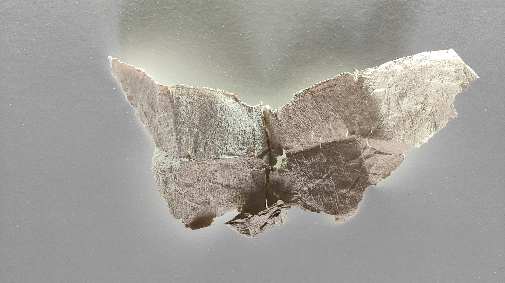
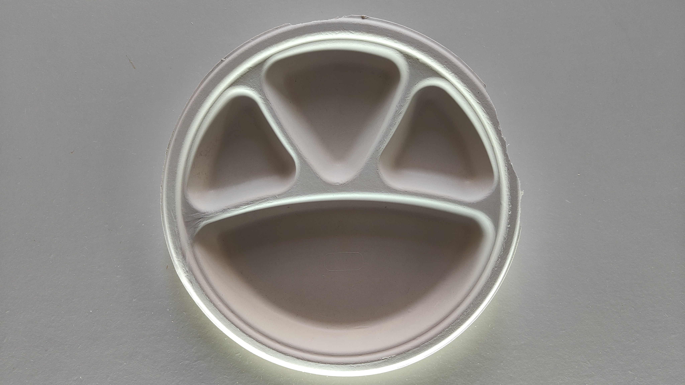
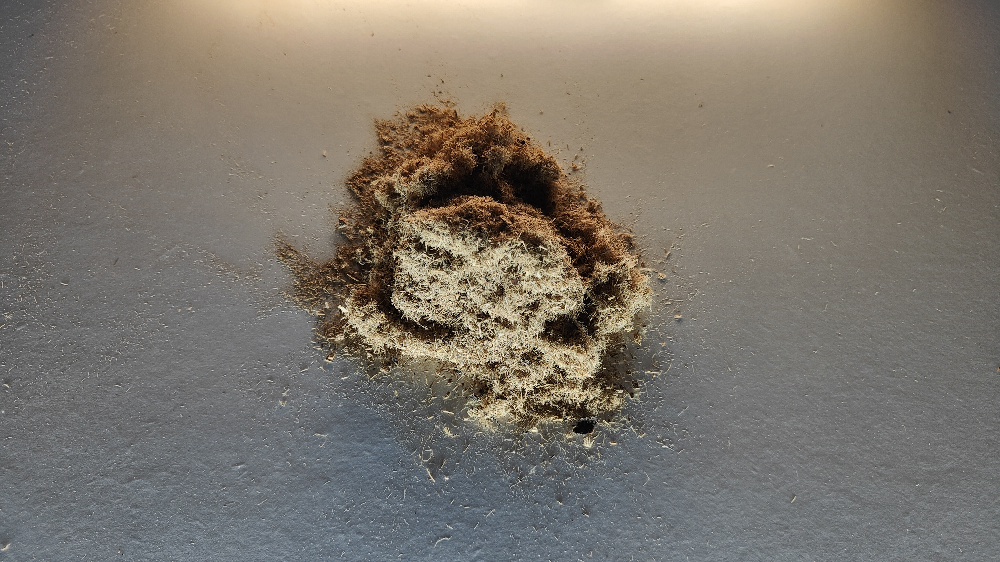
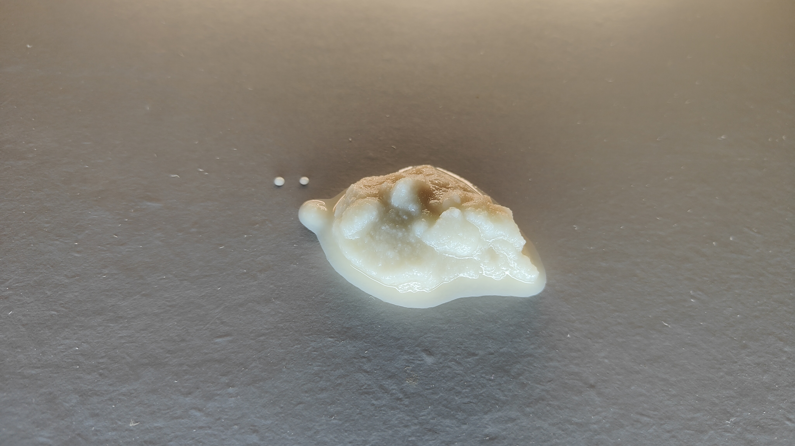
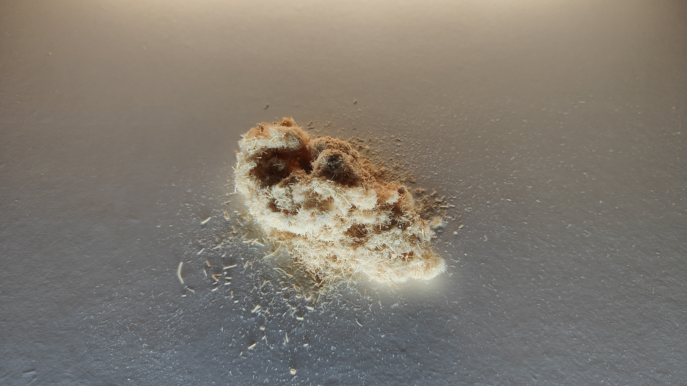

Project 01
Sustainable Materials Innovation
Developed viable commercial product prototypes utilizing organic byproducts. Formulated specialized blends of areca fiber, bagasse, and tea leaf powder to manufacture structurally sound disposable plates, eco-friendly pillow fillings, and moisture-resistant barrier coatings.
COMMERCIAL OUTPUTS
4 Viable Prototypes
CORE BIO-MATERIALS
Areca, Bagasse, Tea
PRIMARY APPLICATION
Packaging & Fill





